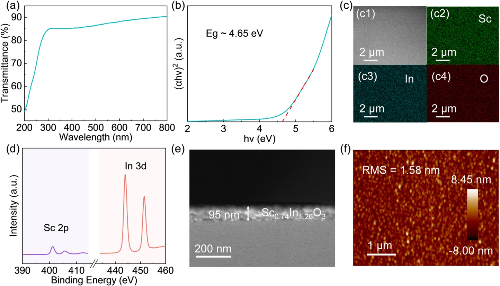
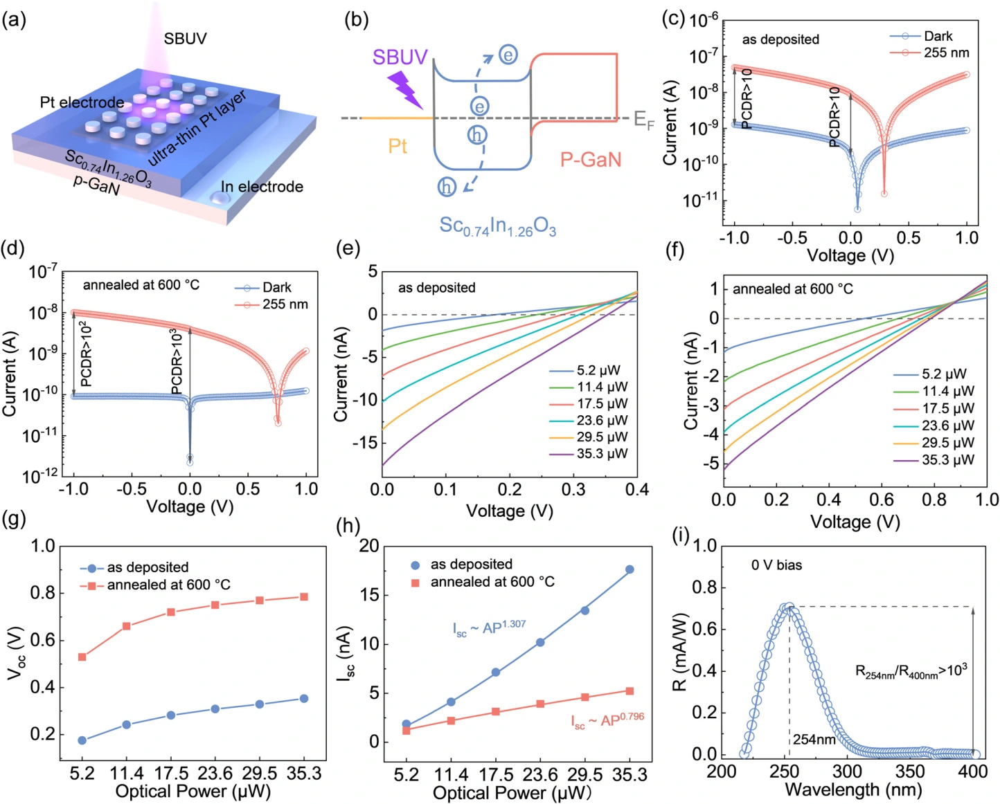
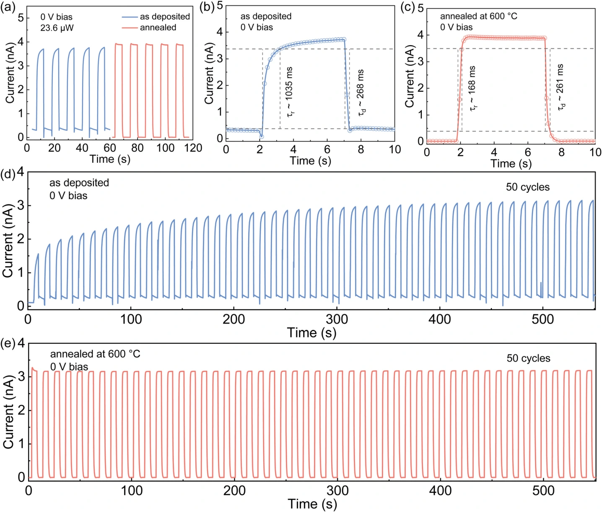
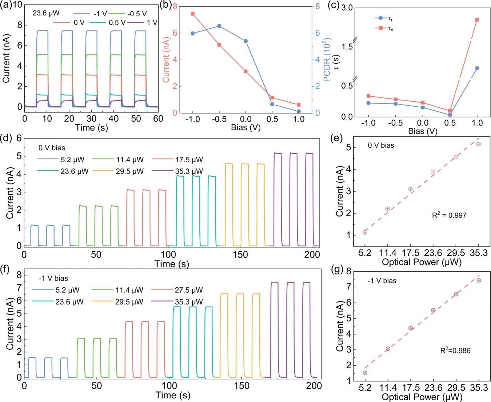
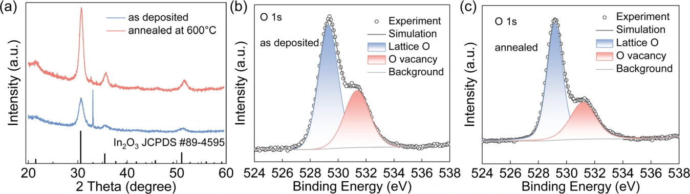

退火与缺陷调控：Sc–In–O 日盲紫外自供能探测
以共溅射匹配日盲吸收
通过 Sc₂O₃ 与 In₂O₃ 共溅射制备 Sc₀.₇₄In₁.₂₆O₃ 薄膜，将光学带隙调节为 4.65 eV。SEM、EDS、XPS 与 AFM 表征支持组分均匀性与薄膜质量；截面厚度约 95 nm，退火后的表面均方根粗糙度约 1.58 nm。

背靠背势垒实现零偏压探测
Pt / Sc₀.₇₄In₁.₂₆O₃ / p-GaN 结构结合超薄 Pt 透光收集层与底部 In 接触，利用界面势垒抑制暗态注入，并在光照下分离电荷。退火后 0 V 暗电流约 2.2 pA；254 nm 峰值响应度为 0.71 mA/W，光谱半高宽约 45 nm，254 nm 与 400 nm 的响应比超过 10³。

改善响应速度与循环重复性
0 V、255 nm 照射下，退火前上升与下降时间约 1035 / 268 ms，退火后为 168 / 261 ms。50 次开关循环后光电流变化仅约 0.5%。速度改善主要体现在上升过程，循环中的输出漂移也受到抑制。

用多条件测试检验稳定读出
作者比较不同偏压及光功率下的电流响应、光暗电流比和响应时间。零偏压模式兼顾探测表现与低运行功耗，光电流随光功率呈良好线性关系；反向偏压下也保持可重复的光响应。

以晶体与缺陷表征解释性能变化
600 ℃ 空气退火后，XRD 峰增强、半高宽减小，支持结晶质量改善。作者将 O 1s 高结合能拟合分量归因于氧空位相关成分，其比例由 37.2% 降至 33.9%；结合电学结果，提出缺陷减少与界面改善共同降低暗电流和俘获损失。该拟合比例属于作者的谱峰归属分析。

A high-performance self-powered solar-blind UV photodetector based on an annealed Sc0.74In1.26O3 ternary alloy film
Zhengdong Jiang, Peicheng Jiao, Yutao Xiong, Zhiyuan Luo, Dan Zhang, Yanghui Liu, Wei Zheng
Journal of Materials Chemistry C 13 (2025), 13197–13205